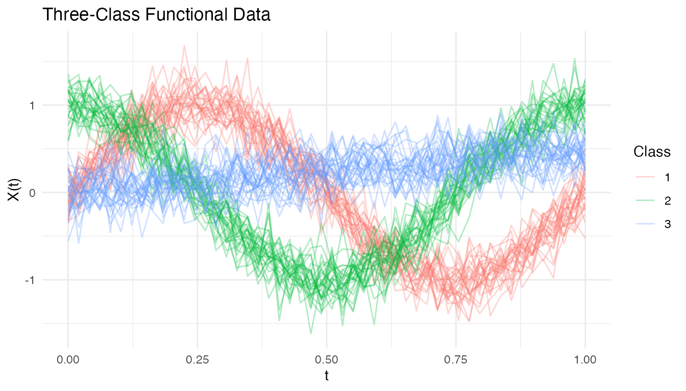
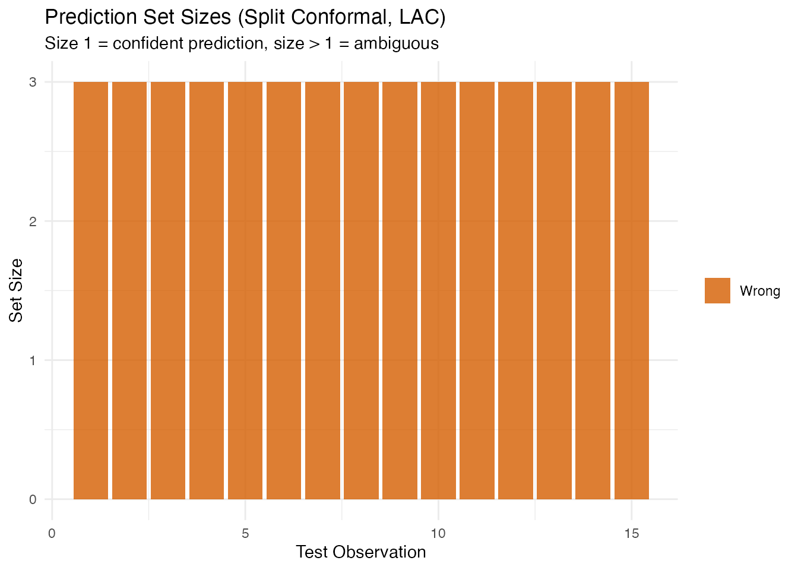
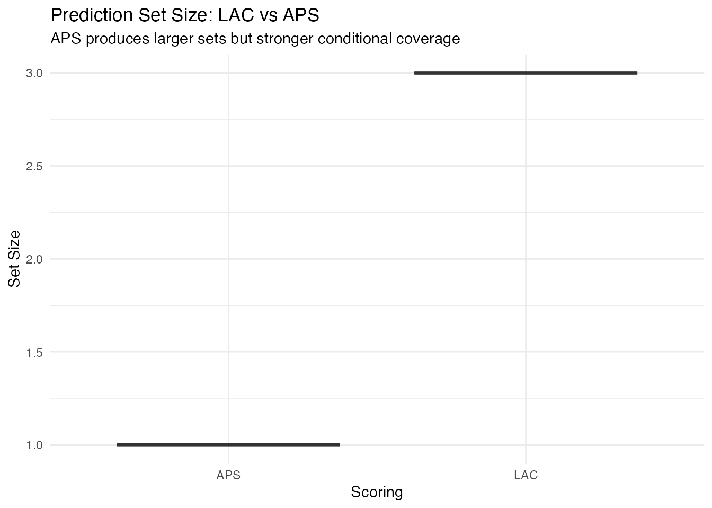

Conformal Prediction for Classification
Source:vignettes/articles/conformal-classification.Rmd
conformal-classification.RmdIntroduction
Conformal prediction for classification produces prediction sets — sets of plausible labels with a coverage guarantee — instead of point predictions. For a new observation , the conformal prediction set satisfies:
for any distribution, with no assumptions on the data-generating process.
Unlike regression conformal (which produces intervals), classification conformal answers: “which classes are plausible for this observation?” A set of size 1 means high confidence; larger sets indicate ambiguity.
Simulated Data
We simulate a three-class functional classification problem where each class has a distinct mean curve:
n_per_class <- 30
n <- 3 * n_per_class
m <- 50
t_grid <- seq(0, 1, length.out = m)
X <- matrix(0, n, m)
for (i in 1:n_per_class) {
X[i, ] <- sin(2 * pi * t_grid) + rnorm(m, sd = 0.2)
X[n_per_class + i, ] <- cos(2 * pi * t_grid) + rnorm(m, sd = 0.2)
X[2 * n_per_class + i, ] <- 0.5 * t_grid + rnorm(m, sd = 0.2)
}
labels <- rep(1:3, each = n_per_class)
# Train/test split
train_idx <- c(1:25, 31:55, 61:85)
test_idx <- setdiff(1:n, train_idx)
fd_train <- fdata(X[train_idx, ], argvals = t_grid)
fd_test <- fdata(X[test_idx, ], argvals = t_grid)
y_train <- labels[train_idx]
y_test <- labels[test_idx]
df_curves <- data.frame(
t = rep(t_grid, n),
value = as.vector(t(X)),
curve = rep(1:n, each = m),
class = factor(rep(labels, each = m))
)
ggplot(df_curves, aes(x = .data$t, y = .data$value,
group = .data$curve, color = .data$class)) +
geom_line(alpha = 0.3) +
labs(title = "Three-Class Functional Data",
x = "t", y = "X(t)", color = "Class")
Scoring Rules
Conformal classification uses a nonconformity score to measure how surprising a label is for a given observation. fdars supports two scoring rules:
| Score | Name | Description | Set size |
|---|---|---|---|
| LAC | Least Ambiguous Criterion | Smaller (adaptive) | |
| APS | Adaptive Prediction Sets | Cumulative probability until true class included | Larger (conservative) |
LAC produces smaller prediction sets on average but provides only marginal coverage. APS guarantees coverage even conditionally on the true class, at the cost of slightly larger sets.
Split Conformal Classification
The simplest approach splits the data into a proper training set and a calibration set. The model is fitted on the training set, nonconformity scores are computed on the calibration set, and the -quantile of scores determines the prediction set threshold.
# Split conformal with LDA classifier and LAC scoring
conf_split <- conformal.classif(
fd_train, y_train, fd_test,
ncomp = 5, classifier = "lda",
score.type = "lac",
cal.fraction = 0.25,
alpha = 0.10, seed = 42
)
cat("Predicted classes:", conf_split$predicted_classes, "\n")
#> Predicted classes: 0 0 0 0 0 1 1 1 1 1 2 2 2 2 2
cat("Average set size:", round(conf_split$average_set_size, 2), "\n")
#> Average set size: 3
cat("Coverage:", round(conf_split$coverage * 100, 1), "%\n")
#> Coverage: 100 %Examining Prediction Sets
df_sets <- data.frame(
Observation = seq_along(conf_split$set_sizes),
Set_Size = conf_split$set_sizes,
Correct = factor(ifelse(conf_split$predicted_classes == y_test,
"Correct", "Wrong"))
)
ggplot(df_sets, aes(x = .data$Observation, y = .data$Set_Size,
fill = .data$Correct)) +
geom_col(alpha = 0.8) +
scale_fill_manual(values = c("Correct" = "#2E8B57", "Wrong" = "#D55E00")) +
labs(title = "Prediction Set Sizes (Split Conformal, LAC)",
subtitle = "Size 1 = confident prediction, size > 1 = ambiguous",
x = "Test Observation", y = "Set Size", fill = NULL)
CV+ Conformal Classification
Cross-conformal (CV+) avoids the data-splitting penalty of split conformal. Each fold serves as the calibration set for the model trained on the remaining folds. All data contributes to both training and calibration.
cv_conf <- cv.conformal.classification(
fd_train, y_train, fd_test,
ncomp = 5, classifier = "lda",
score.type = "lac",
n.folds = 5,
alpha = 0.10, seed = 42
)
cat("CV+ average set size:", round(cv_conf$average_set_size, 2), "\n")
#> CV+ average set size: 4
cat("CV+ coverage:", round(cv_conf$coverage * 100, 1), "%\n")
#> CV+ coverage: 100 %Generic Conformal Classification
If you already have a fitted functional.logistic model,
you can construct conformal prediction sets without re-fitting. This is
useful when the model is expensive to train or when you want to
conformalize an existing model:
# Binary classification for generic conformal (requires logistic model)
# functional.logistic expects 0/1 labels
idx_train_bin <- y_train %in% c(1, 2)
idx_test_bin <- y_test %in% c(1, 2)
train_binary <- fd_train[idx_train_bin, ]
test_binary <- fd_test[idx_test_bin, ]
y_train_bin <- as.integer(y_train[idx_train_bin] == 2) # recode to 0/1
y_test_bin <- as.integer(y_test[idx_test_bin] == 2)
# Fit logistic model
log_model <- functional.logistic(train_binary, y_train_bin, ncomp = 3)
# Generic conformal from the fitted model
gen_conf <- conformal.generic.classification(
log_model, train_binary, y_train_bin, test_binary,
score.type = "lac",
cal.fraction = 0.25, alpha = 0.10, seed = 42
)
cat("Generic conformal coverage:", round(gen_conf$coverage * 100, 1), "%\n")
#> Generic conformal coverage: 100 %
cat("Average set size:", round(gen_conf$average_set_size, 2), "\n")
#> Average set size: 0.9Comparing Classifiers
Split conformal works with different base classifiers. Compare LDA, QDA, and kNN:
classifiers <- c("lda", "qda", "knn")
results <- lapply(classifiers, function(clf) {
res <- conformal.classif(
fd_train, y_train, fd_test,
ncomp = 5, classifier = clf,
score.type = "lac",
cal.fraction = 0.25,
alpha = 0.10, seed = 42
)
data.frame(
classifier = toupper(clf),
coverage = res$coverage,
avg_set_size = res$average_set_size
)
})
df_clf <- do.call(rbind, results)
knitr::kable(df_clf, digits = 3,
col.names = c("Classifier", "Coverage", "Avg Set Size"))| Classifier | Coverage | Avg Set Size |
|---|---|---|
| LDA | 1 | 3 |
| QDA | 1 | 3 |
| KNN | 1 | 3 |
LAC vs APS Scoring
conf_lac <- conformal.classif(
fd_train, y_train, fd_test,
ncomp = 5, classifier = "lda",
score.type = "lac",
cal.fraction = 0.25, alpha = 0.10, seed = 42
)
conf_aps <- conformal.classif(
fd_train, y_train, fd_test,
ncomp = 5, classifier = "lda",
score.type = "aps",
cal.fraction = 0.25, alpha = 0.10, seed = 42
)
df_score <- data.frame(
Scoring = rep(c("LAC", "APS"), each = length(y_test)),
Set_Size = c(conf_lac$set_sizes, conf_aps$set_sizes)
)
ggplot(df_score, aes(x = .data$Scoring, y = .data$Set_Size,
fill = .data$Scoring)) +
geom_boxplot(alpha = 0.7) +
scale_fill_manual(values = c("LAC" = "#4A90D9", "APS" = "#D55E00")) +
labs(title = "Prediction Set Size: LAC vs APS",
subtitle = "APS produces larger sets but stronger conditional coverage",
y = "Set Size") +
theme(legend.position = "none")
Method Comparison
| Method | Function | Base models | Coverage | Sets |
|---|---|---|---|---|
| Split | conformal.classif() |
LDA, QDA, kNN | Tightest | |
| CV+ | cv.conformal.classification() |
LDA, QDA, kNN | Tighter (no split penalty) | |
| Generic | conformal.generic.classification() |
Logistic (pre-fitted) | From existing model |
Choosing a method:
- Split conformal when data is plentiful and you want the strongest coverage guarantee ().
- CV+ when data is limited and you want tighter sets — all data is used for both training and calibration.
- Generic when you already have a fitted logistic model and want to add uncertainty quantification without re-training.
See Also
-
vignette("articles/uncertainty-quantification")— conformal prediction for regression (intervals, not sets) -
vignette("articles/functional-classification")— base classification methods (LDA, QDA, kNN)
References
Vovk, V., Gammerman, A. and Shafer, G. (2005). Algorithmic Learning in a Random World. Springer.
Sadinle, M., Lei, J. and Wasserman, L. (2019). Least ambiguous set-valued classifiers with bounded error levels. Journal of the American Statistical Association, 114(525), 223–234.
-
Romano, Y., Sesia, M. and Candes, E.J. (2020). Classification with valid and adaptive coverage. Advances in Neural Information Processing Systems,